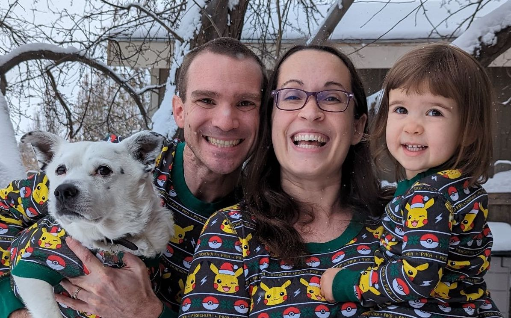

Interests

Besides being a web developer, I absolutely love hanging out with my amazing group of friends and beloved family. As a proud dad, I get immense joy from spending quality time with my little ones. Whether it's embarking on exciting escapades around our town, engaging in imaginative play at home, or getting our hands messy in the kitchen and whipping up delicious treats together, every moment spent with my family is an absolute treasure.
One of my biggest passions is playing games. I have a whopping collection of over 100 board games that range from mind-bending sci-fi challenges to lighthearted and entertaining party games. Among them, my ultimate favorites are Spirit Island, where I can channel my strategic prowess, and Battlestar Galactica, which never fails to have us on the edge of our seats. Additionally, I adore diving into the immersive world of video games. Currently, my go-to is a captivating mobile Star Wars game, where I get to interact with beloved characters and even foster online friendships with fellow gamers. It's an absolute blast!